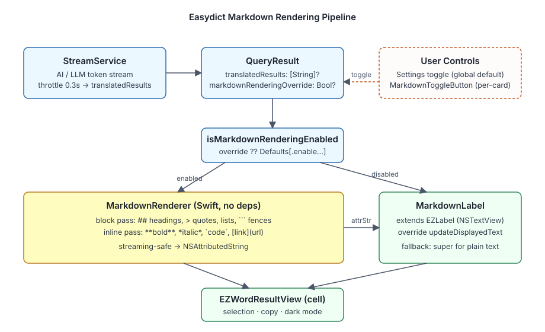

Feature / Markdown
Markdown 目录概览
把流式 AI / LLM 翻译服务返回的 Markdown 文本渲染为带样式的
NSAttributedString，并复用现有的 EZLabel 展示链路。
概览
仅在流式服务（QueryService.isStream() == true）上启用，对
Google / Bing / DeepL / 有道等普通服务保持现有纯文本行为。提供
「全局设置开关」和「单条结果即时切换图标按钮」两种入口；渲染器无外部依赖，
对未闭合标记容错，因此在 0.3s 节流的流式更新下也不会崩溃。

关键组件
-
MarkdownRenderer.swift行级 Markdown →NSAttributedString转换器，支持 ATX 标题、**bold**/*italic*/***bold+italic***、> 引用、有序无序列表、 围栏与行内代码、[text](url)链接、~~删除线~~。下划线强调要求词边界，避免foo_bar_baz这类标识符被误斜体；渲染结尾会裁掉多余换行， 保证测高与纯文本一致。 -
MarkdownLabel.swift是EZLabel子类，覆写updateDisplayedText。markdownEnabled为true时走渲染器，为false时回落父类纯文本路径， 从而复用选中、复制、暗色模式与高度计算等现成行为。 -
MarkdownToggleButton.swift是流式结果卡片底部的图标按钮。 点击后翻转QueryResult.markdownRenderingOverride， 触发表格行重建以应用新状态，并带淡入淡出过渡。
主流程
-
用户在「设置 → 通用 → 显示」打开 / 关闭全局开关，写入
Defaults[.enableMarkdownRendering]。 -
流式服务产出文本，经 0.3s 节流写入
QueryResult.translatedResults。 -
EZWordResultView在重建结果行时，对service.isStream的服务实例化MarkdownLabel， 并按result.isMarkdownRenderingEnabled（per-result 覆盖优先于全局默认）设置markdownEnabled。 -
MarkdownLabel在每次setText后调用MarkdownRenderer重新解析，将结果写入textStorage。 -
卡片底部
MarkdownToggleButton调用QueryResult.toggleMarkdownRendering()并触发updateCellWithResult:reloadData:YES，重建该行视图。
调试入口
-
渲染样式问题先在
MarkdownRenderer的appendHeading/appendBlockquote/appendListItem/appendCodeBlock/renderInline分支定位；这些分支负责所有字体、缩进与背景属性。 -
流式期间样式抖动：检查
MarkdownLabel.updateDisplayedText是否被setFont/setLineSpacing/ 暗色模式回调多次触发。 -
开关与按钮联动：确认
QueryResult.isMarkdownRenderingEnabled是否正确地把 per-result 覆盖优先于Defaults[.enableMarkdownRendering]。 -
单测入口：
EasydictTests/Feature/Markdown/MarkdownRendererTests.swift， 覆盖块级 / 行内 / 流式残缺 / 末尾换行 / 性能预算。